“No matter who you are, no matter what you did, no matter where you've come from, you can always change, become a better version of yourself.”
self improvment tips
☰
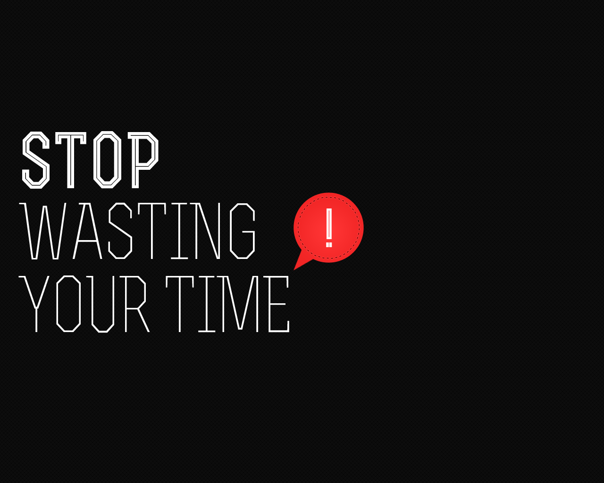
Stop Wasting Time
"
I bet you could easily carve out a few hours in your day to learn a new skill. It’s all about shifting things around. Most notably, stop watching so much TV! Studies show that too much TV watching is harmful to our health.
How do you stop watching so much TV? For some, you will have to take drastic measures, like canceling your cable. For others, delaying the show works. Delaying is what works for.
"
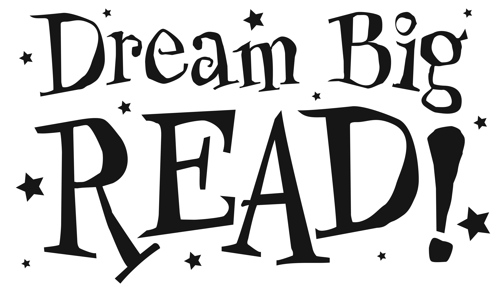
Read
"
Reading stimulates the mind. Do you know how many books I read last year? Zero. That falls in line with the numbers from 2012 that show 29% of Americans read 2 or less books. This year, I’ve read 4. Granted, 2 were while on my honeymoon. How do I find the time to read? Simple. I turn off the TV 30 minutes before bed and read. I don’t miss anything important on TV and it helps me to prepare for a good night’s sleep.
"
Meditate
"
Along with learning new skills and reading, you should fill up you new found free time by meditating for 10 minutes per day. Some may think that meditating is a waste of time, but I find that clearing my head of all of my thoughts and just being present has a huge effect on my mood and happiness.
"
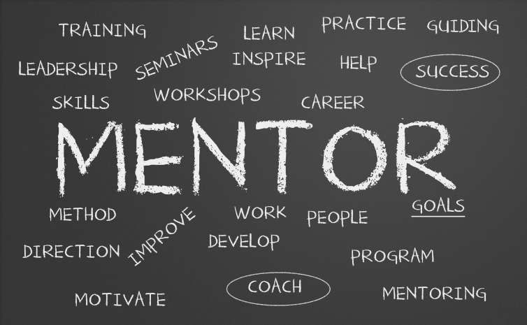
Find A Mentor
"
We all have those we look up to. Find a mentor who is successful at what you want to do and to learn from them. Many successful people are more than willing to help out those who ask for help and are happy to take you under their wing.
"
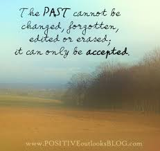
Accept The Past
"
Along the same lines of accepting change is also learning to accept the past. What is done is done. Nothing you can do now will ever change the past. It’s part of history. The only thing you can do is learn from the experience and move on, push forward. Forgive and move forward. If you can’t learn to do that, you will never become the best person you can be. You will be focusing on the wrong things.
"
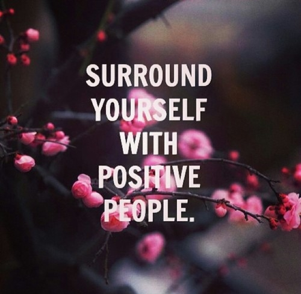
Surround Yourself With Positive People
"
The old saying, “you are the company that you keep”, is true. If you are always hanging around with unmotivated people, you too will be unmotivated to succeed in life. On the other hand, if you hang around with successful people, you too will find success.
Are there people in your life you would be better off no longer spending time with?
"
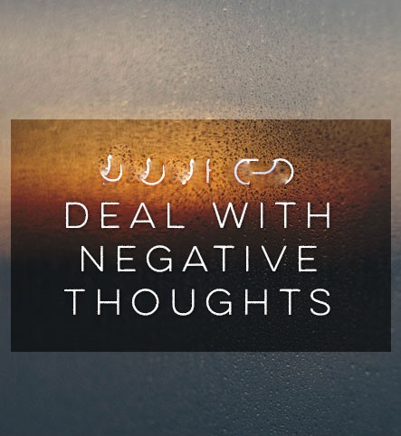
Deal With Negative Thoughts And Emotions
"
I mentioned in a previous tip about learning to love yourself. You will always have critics, including yourself. You need to learn to deal with any negative thoughts and emotions you have. At first, you may find this difficult to do. But over time, controlling your thoughts will become easier
"
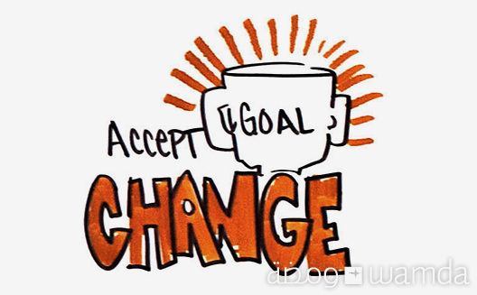
Accept Change
"
Part of pushing through tough times is all about accepting change. Nothing in life is forever. Things are constantly changing – we age every day, the seasons change every 3 months. It’s part of life. The sooner you can accept that change happens, the sooner you can begin to be the best you possible
"
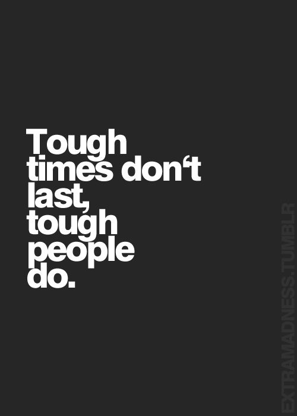
Push Through Tough Times
"
You will fail. You will struggle. Life will be hard sometimes. But you have to keep pushing through. This builds character. When you push through a hard time, the next hard time you encounter will be easier to get through. Why? Because you proved to yourself that you can get through anything. That belief is a huge part of self improvement.
"
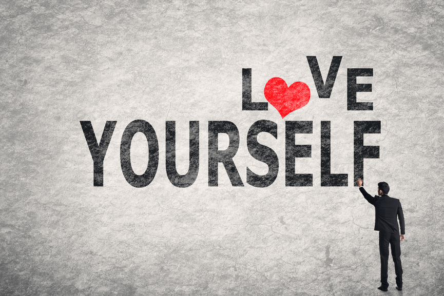
Love Yourself
"The first self improvement tip is learning to love yourself. You have to learn to accept who you are and that you are beautiful just the way you are. You are supposed to simply be you.
All throughout our daily lives we have others put us down for who we are or what we believe in. They are against you; you need to be for you. If you are against you, there is no hope of living an amazing life. Why give others the power over you?
Tell yourself how special you are every day. Learn to recognize what talents and qualities you have that are special. we are all special in our own way."
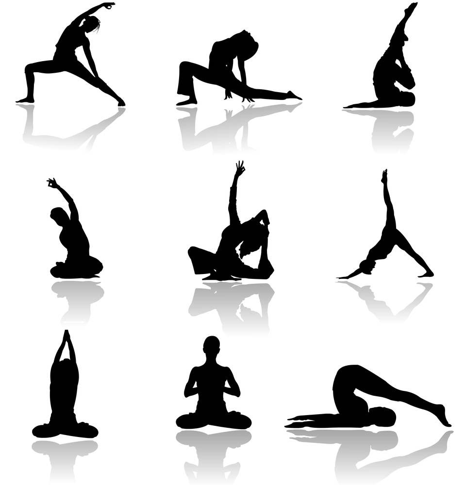
Exercise
"I make it a point to exercise a few times a week. When I do, I feel great. Working up a sweat and moving weights makes me feel good about myself and improves my mood. Not surprisingly, when I am busy and can’t make it to the gym, I find I am less motivated in general and my mood sours.
When you lift heavy weights, your body exerts more effort and you release more hormones into your system. This is what makes you feel better and improves your mood.With this said, if you are brand new to lifting weights, definitely go light to start so that you don’t injure yourself".
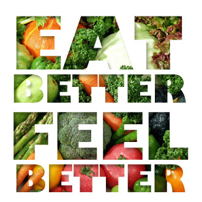
Eat Better
"
If you are going to work out, you might as well eat well too, right? I find when I am working out, I eat better. When I stop working out, I eat poorly. It’s a simple cycle really. I lift weights, I feel good about myself, I eat well and the cycle repeats.
Motivation Cycle
Most times you are feeling like crap because you are eating highly processed, sugary foods. Try to eat healthy just for a week. Limit your sugar intake and eat more natural foods – fruits and vegetables. The first day or so might be hard, but give your body time to adjust and you will be amazed.
"
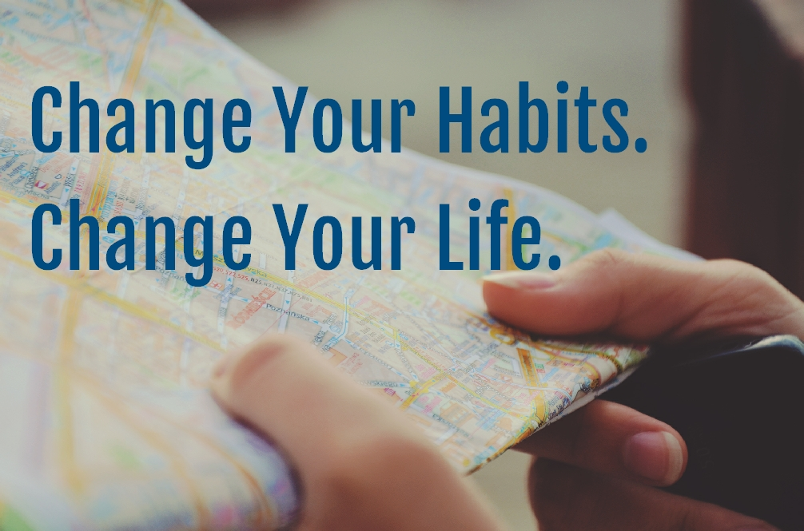
Change Your Habits
"
We are all creatures of habit. We follow the same routines, day in, day out. This makes life easier for us, but also makes us lazy. To spice things up, change your habits. I’m not talking about refraining from brushing your teeth, but maybe brush with the opposite hand.
Instead of taking the same way to work every day, try a new way. Make Tuesday nights family nights. Find simple ways to change things up in life.
"
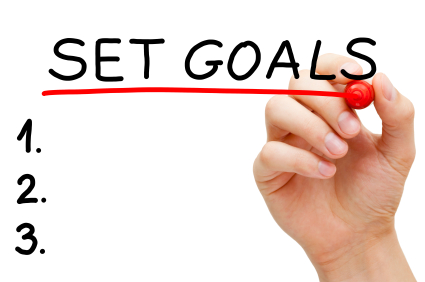
Set Goals
"
While you change your habits, you should also focus on setting goals for yourself. Where do you want to be in one year, or three or five years? Don’t just write them down, but visualize these goals. Make the goals a part of you.
I have some long term goals for myself. I’ve gotten so good at visualizing them that I can see specific details, like blades of grass when I close my eyes and think of the house and yard I want to own. Don’t get upset if you can’t do this right away. Start small and just begin to visualize.
"
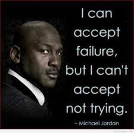
Accept Failure
"
You are going to fail many times in life. Failing is OK. In fact, you should embrace failure. When you stretch beyond your comfort zone, you are growing as a person. It is only natural that you will fail. Don’t fall for the lie that failing is bad.
Think about failing like this: As a toddler, we have to learn to walk. If you ever watch a toddler learning to walk, she falls down many, many times. In other words, she fails countless times. Why is a child failing to learn to walk OK but you failing to learn a new skill as an adult a bad thing? At the end of the day it is still failure.It is only a bad thing if you never learn from it. Fail, learn and grow.
"
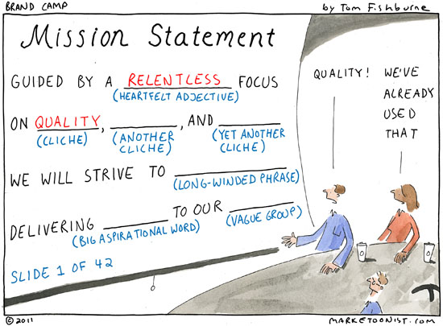
Create A Mission Statement
"
You need to know who you are and what you stand for. In other words, you need to create a personal mission statement. Don’t mull over creating the perfect mission statement here. Just come up with something that identifies who you are and what you are about. As time goes on, you can modify it.
My mission statement talks about being a healthy person that always looks for the positive in life. Again, nothing complicated and there is room for improvement – just like with life.
"
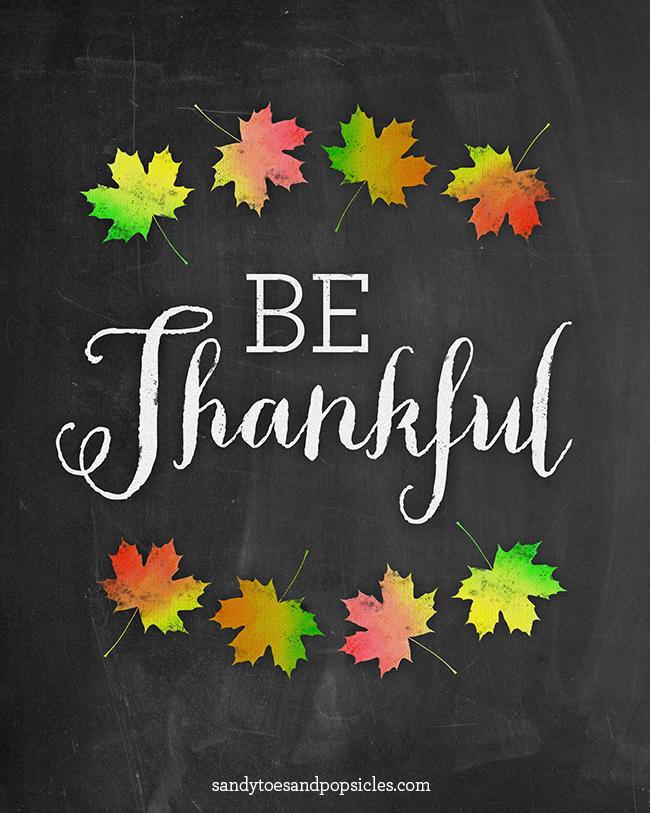
Be Thankful
"
You need to be thankful for all that you have. Why are so many people living in debt? Because they are chasing happiness. They think that happiness comes from things. They don’t realize that happiness comes from within.
It’s the same with the quote “success leads to happiness”. It doesn’t. Happiness leads to success. Be happy with all that you have. Odds are you have it better than the majority of people:
"
Learn A New Skill
"
Learning a new skill breeds confidence in ourselves. When we learn something new, we get excited and are eager to learn more. So what is it that you have always wanted to learn but always put off? Write a short list of things and then start working on learning those new skills.
"
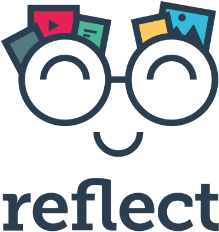
Reflect
"
At the end of the day, reflect on what happened. Was it a good day? Even if bad things happened, find ways to spin them into something positive. In other words, don’t let the negative thoughts take root in your mind. Be thankful for all that happened to you today and vow to be an even better person tomorrow
"